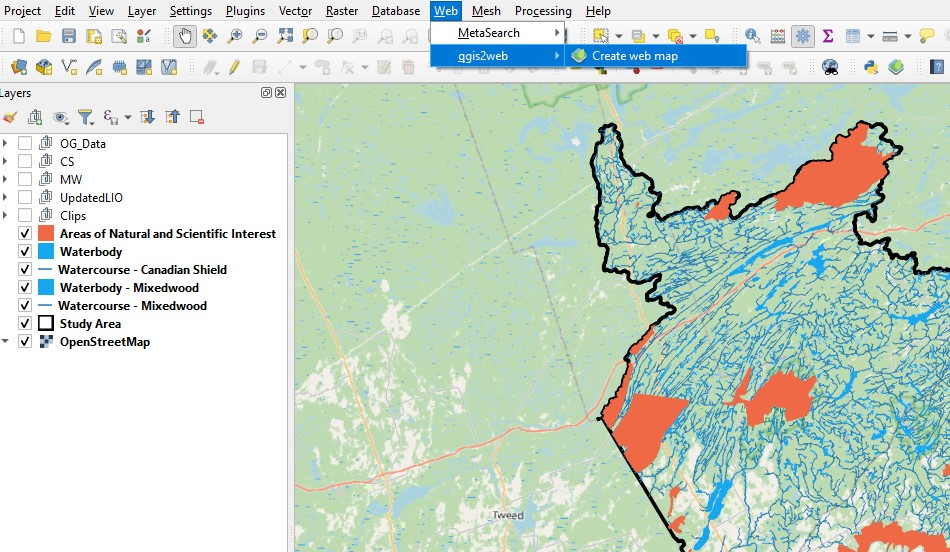
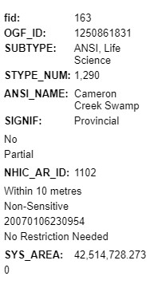
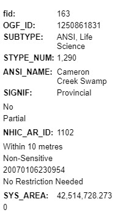
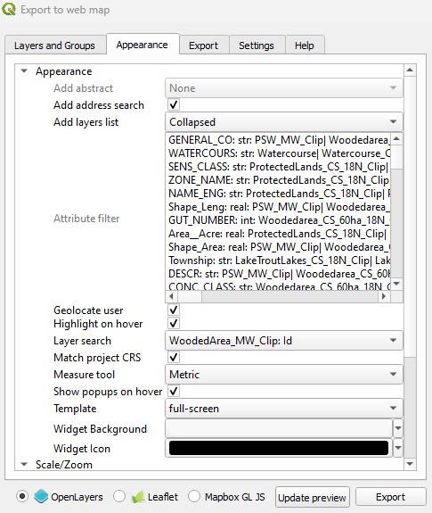
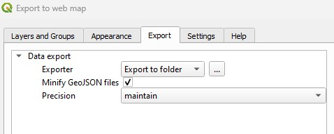
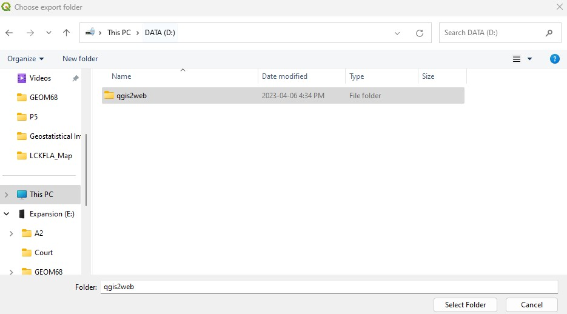
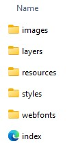

QGIS is an open-source application that offers an abundance of GIS functions provided by core features and plugins that allow users to explore, create, edit, manage, analyze, and export geospatial data, in addition to composing, exporting, and publishing maps. The QGIS2Web plugin is one example of the many open-source options of advanced functions available within QGIS that extends the functionality of the desktop application. This specific plugin allows the user to publish a QGIS project online as a dynamic and interactive web map that is generated using Leaflet, OpenLayers, or Mapbox GL JS libraries. QGIS2Web has many available settings that can be adjusted to customize the web map interface that include selecting the layers to display, how feature attributes and attribute labels will be displayed, adding pop ups, a search bar, measuring distances tool, and other custom features to enhance user interaction.
Pros
Cons
The exported web map can only be viewed by the user that initially created the map in QGIS desktop and has access to all of the files in the exported directory. The directory contains all of the data and code required to display the web map and will need all of the files to display properly. The web map can only be viewed by or shared with others by using one of two methods.
The first method is to compress the exported directory and send via email. This will allow the recipient(s) to have access to all of the required files to needed open the web map. The recipient will simply decompress the file and open the 'index.html' to display the web map on a web browser, without any additional processes or software installations required. This method is effective for sharing finished maps and maintaining privacy. However, any changes to the map can only be completed in the QGIS desktop application and will require repeating the export to web map process, as well as resending the latest directory, to display the updated web map in a browser.
The second method is to upload the exported directory to a web server. This will require setting up an account with a public cloud storage service, creating a bucket, and uploading the contents of the exported directory to the bucket. Once the data is uploaded, the 'Object URL' located in the 'index.html' file will provide access to the web map. This method is effective for sharing public maps only and requires knowledge on web server maintenance and bucket creation.
The process of downloading and learning QGIS software was no difficult task. With the assistance of easily accessible and readily available online guides, tutorials, and other training materials provided by the open-source QGIS community, I was able to effectively transition to a new GIS work environment and develop a customized web map. The user-friendly interface of the QGIS desktop application facilitates ease of use in features and plugins. Within QGIS desktop, I was able to import and process data, symbolize and edit layers, and add a basemap. Once the project was complete and ready for export, the plugin install was a simple process: Main Menu > Plugins > Manage and Install Plugins, enter 'qgis2web' in the search bar, click 'qgis2web' option, and click 'install'. Once the install was complete, the steps to export the project to a web map began:
Locate the 'qgis2web' plugin under the 'Web' tab in the main menu and select 'Create web map'.

In the new window, under the 'Layers and Groups' tab, layer labels and popups can be customized.
 

Under the 'Appearance' tab, additional widgets can be customized and added to the display.

Under the 'Export' tab, select the location the directory will be stored. Once the export is complete, the 'index' file will open the web map in the web browser.

Customized web map created from open-source software.